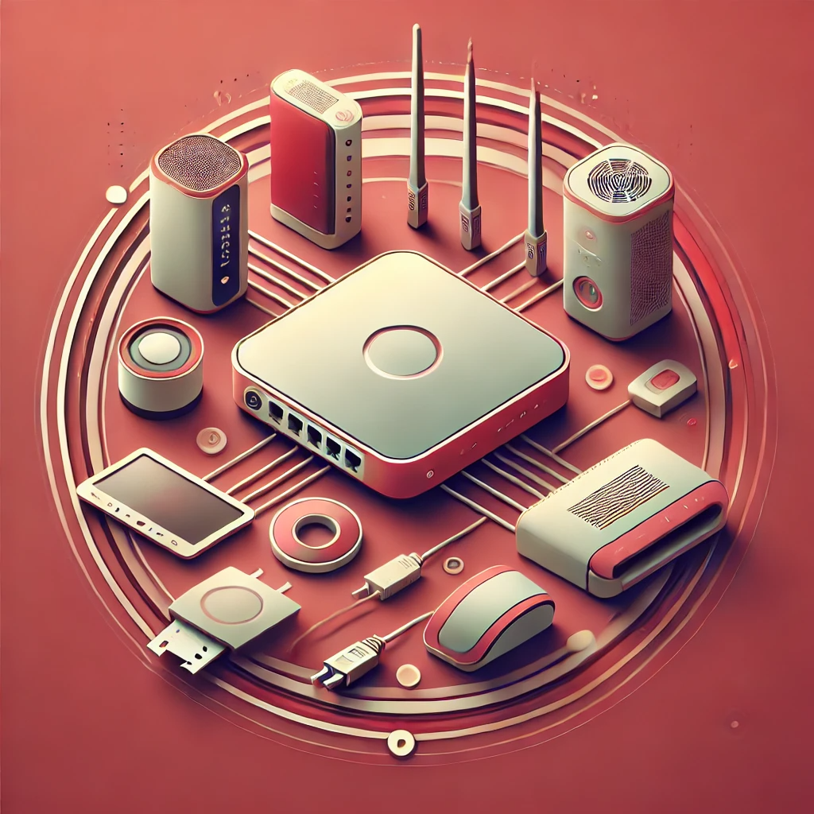
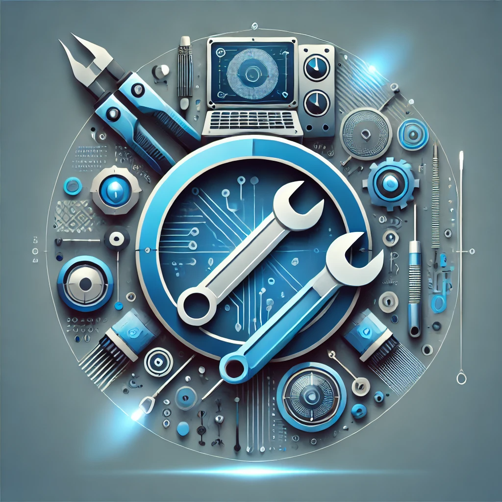

Hardware Services
- Hardware installation and upgrade
- Motherboard installation and upgrade
- Power supply installation and upgrade
- SSD and HDD installation and configuration
- Custom-built PC setup and assembly
- Graphics card installation and upgrade
- CPU installation and upgrade
- Cooling system installation (fans, liquid cooling)
- Peripheral hardware setup (keyboards, mice, external storage)
- Laptop and desktop hardware diagnostics and upgrade recommendations
- PC case upgrades and cable management
- Expansion card installation (USB cards, network cards, sound cards)
- Hardware compatibility assessment and upgrade consultation
- Hard drive and SSD cloning services
- Network card installation and configuration
- BIOS chip replacement and upgrades
- External display setup and multi-monitor configuration
- Gaming PC hardware customization
- Power supply surge protection and UPS installation
Software Services
- Operating system installation and configuration
- Driver updates and troubleshooting
- BIOS updates and configuration
- Antivirus and Security Software Installation
- Software Updates and Patching
- Application Installation and Troubleshooting
- Email Client Setup and Configuration
- Virtual Machine Setup and Management
- Disk Cleanup and Optimization
- Software Licensing and Activation Assistance
- Cloud Backup Software Setup and Configuration
- Parental Control Software Installation and Configuration
- Productivity Software Installation
- Software Error Diagnosis and Fix
Virus and Data Services
- Virus and malware removal
- Data recovery and backup
- Data transfer and migration
- Ransomware removal and prevention
- Spyware and adware removal
- Phishing attack protection and recovery
- Real-time antivirus and security monitoring setup
- System cleanup after virus attacks
- Hard drive data recovery
- Cloud data backup setup and management
- Encrypted data backup services
- File corruption repair
- Data breach assessment and recovery
- Disk imaging and cloning for data backup
- Data wiping and secure deletion services
- Email and attachment virus scanning and cleanup

Network and Peripheral Services
- Network and internet connectivity issues
- Printer and peripheral device setup and repair
- Wi-Fi network setup and optimization
- Router and modem configuration
- Network security assessment and firewall setup
- VPN setup and configuration
- Wireless signal boosting and range extension
- Network troubleshooting and diagnostics
- File and printer sharing setup across a network
- Network monitoring and performance optimization
- Peripheral device driver updates and troubleshooting
- External hard drive and storage device configuration
- Bluetooth and wireless device setup
- NAS (Network-Attached Storage) setup and configuration

Diagnostics and Repair
- Overheating issue diagnosis and repair
- Water damage repair
- Computer cleaning and dust removal
- Power supply diagnostics and replacement
- Motherboard diagnostics and repair
- Hard drive failure diagnostics and replacement
- RAM diagnostics and upgrade
- Graphics card failure diagnostics and replacement
- Blue screen error troubleshooting and repair
- Computer boot-up issues diagnosis
- Fan noise troubleshooting and repair
- Laptop hinge repair and replacement
- Battery diagnostics and replacement
- Display and screen repair (LCD, LED)
- Keyboard and trackpad repair/replacement
- BIOS diagnostics and troubleshooting